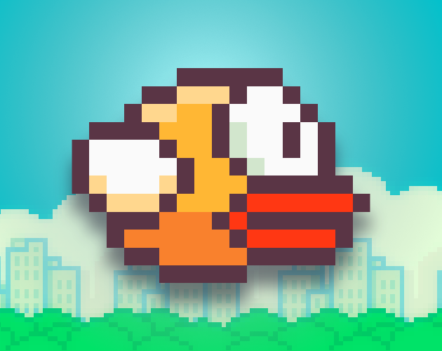

BTS SIO
Sommaire
Plan de la présentation
- Présentation approfondie
- Objectif du jeu
- Gameplay
- Principe de difficulté
- Design et direction artistique
- Plateforme et accessibilité
- Succès et impact culturel
- Conclusion
Présentation approfondie
Flappy Bird est un jeu vidéo mobile développé par Dong Nguyen et sorti en 2013. À première vue, il s'agit d'un jeu extrêmement simple, avec un oiseau, des obstacles et une seule action possible. Pourtant, malgré cette simplicité apparente, il a connu un succès mondial spectaculaire et est devenu un véritable phénomène culturel du jeu mobile. Ce contraste entre simplicité et difficulté est l'une des raisons principales de sa popularité. Le jeu a également marqué les esprits par sa disparition soudaine des plateformes, ce qui a renforcé son statut "mythique".

Objectif du jeu
L'objectif de Flappy Bird est volontairement minimaliste : le joueur doit contrôler un oiseau et le faire évoluer le plus loin possible dans un environnement rempli d'obstacles. Chaque obstacle franchi rapporte un point, ce qui incite le joueur à améliorer son score à chaque partie. Il n'existe pas de fin définie, ni de niveau final, ce qui transforme le jeu en boucle infinie basée uniquement sur la performance personnelle.
Ce système repose sur un principe psychologique important : le joueur cherche constamment à battre son propre record. Cela crée une forme de répétition addictive, car chaque échec donne envie de recommencer immédiatement.
Gameplay
Le gameplay de Flappy Bird est basé sur une mécanique extrêmement simple mais exigeante. Le joueur n'a qu'une seule action possible : appuyer sur l'écran pour faire monter l'oiseau. Dès que le joueur arrête d'appuyer, la gravité reprend le contrôle et fait descendre l'oiseau automatiquement.
Cette mécanique crée un équilibre permanent entre montée et descente, obligeant le joueur à ajuster son timing en permanence. Le jeu ne laisse aucune marge d'erreur importante, car chaque obstacle nécessite un positionnement précis. Cela rend le gameplay facile à comprendre mais difficile à maîtriser.
Ce choix de design est volontaire : il permet à n'importe quel joueur de commencer immédiatement, mais demande de l'entraînement pour progresser.
Principe de difficulté
La difficulté de Flappy Bird repose principalement sur trois éléments : le timing, la précision et l'absence de tolérance aux erreurs.
Les obstacles sont placés de manière régulière mais exigeante, créant un rythme que le joueur doit apprendre à anticiper. La moindre erreur de timing entraîne une collision immédiate, ce qui met fin à la partie sans seconde chance.
Ce fonctionnement crée une tension permanente, car le joueur doit rester concentré en continu. Contrairement à des jeux modernes qui proposent des aides ou des checkpoints, Flappy Bird impose un redémarrage complet à chaque échec. Cela renforce la frustration, mais aussi l'envie de progresser.
Design et direction artistique
Le design de Flappy Bird est volontairement très simple. Le jeu utilise un style 2D en pixel art avec des graphismes minimalistes. Les couleurs sont peu nombreuses et les éléments visuels sont facilement identifiables.
Ce choix de design n'est pas un manque de complexité, mais une volonté de focaliser l'attention du joueur sur le gameplay. En supprimant les éléments visuels inutiles, le jeu évite toute distraction et met en avant uniquement la mécanique de jeu.
De plus, ce style léger permet au jeu de fonctionner sur presque tous les appareils, même les plus anciens ou les moins puissants.
Plateforme et accessibilité
Flappy Bird a été conçu exclusivement pour les plateformes mobiles, notamment Android et iOS. Le choix du tactile est essentiel dans son gameplay, car une simple pression suffit pour interagir avec le jeu.
Cette simplicité d'utilisation rend le jeu immédiatement accessible à tous les types de joueurs, même ceux qui ne sont pas habitués aux jeux vidéo. Il ne nécessite aucune explication complexe, ce qui explique en partie sa diffusion massive.
Succès et impact culturel
Le succès de Flappy Bird a été extrêmement rapide et inattendu. En quelques semaines, le jeu est devenu viral sur Internet et les réseaux sociaux. Des millions de joueurs ont commencé à y jouer, et il est rapidement devenu l'un des jeux les plus téléchargés sur les stores.
Ce succès s'explique par plusieurs facteurs :
- sa simplicité immédiate
- sa difficulté frustrante mais addictive
- le partage massif de scores et de frustrations en ligne
Cependant, cette popularité soudaine a aussi eu un impact négatif sur son créateur, qui a finalement décidé de retirer le jeu des plateformes de téléchargement. Cette décision a renforcé encore plus la légende du jeu, le transformant en symbole du "jeu viral disparu".
Conclusion
Flappy Bird est un exemple très intéressant de game design, car il montre qu'un jeu peut devenir mondialement connu sans graphismes complexes ni gameplay avancé. Son efficacité repose sur une mécanique simple mais parfaitement calibrée, qui joue sur la frustration et la répétition.
Ce jeu a marqué l'histoire du jeu mobile en prouvant que la simplicité peut être aussi puissante que la complexité, à condition d'être bien pensée.